实验二 用EMACS的ORGMODE编写WINDBG实验文档
Table of Contents
- 一 实验题目
- 二 实验要求
- 三 实验步骤
- 1. 在被调试机中打开notepad，并输入“Hello WinDbg!”。
- 2. 在WinDbg中查看notepad.exe的进程信息。
- 3. 查看cr3的值，发现与上一步输出的页目录表值不同，切换进程上下文后再次查看cr3的值，正确。
- 4. 查找“Hello WinDbg!”字符串所处虚地址。
- 5. 查看0017e7b0的二进制表示形式。
- 6. 对应四级表形式。
- 7. 根据cr3中的基地址与计算出的偏移找到所处PML4T位置的值。
- 8. 根据PML4T位置的基地址与计算出的偏移找到PDPE位置的值。
- 9. 根据PDPE位置的值与计算出的偏移找到PDE位置的值。
- 10. 根据PDE位置的值与计算出的偏移找到PTE位置的值。
- 11. 找到“Hello WinDbg!”字符串所处实地址。
一 实验题目
用EMACS的ORGMODE编写WINDBG虚实地址转换实验文档。
二 实验要求
- 记录WINDBG虚实地址转换步骤；
- 熟悉ORGMODE语法；
- 使用第三方插件导出带有CSS样式的html文件。
三 实验步骤
1. 在被调试机中打开notepad，并输入“Hello WinDbg!”。
2. 在WinDbg中查看notepad.exe的进程信息。
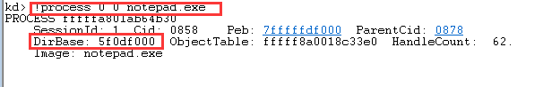
3. 查看cr3的值，发现与上一步输出的页目录表值不同，切换进程上下文后再次查看cr3的值，正确。
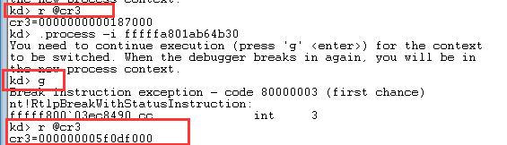
4. 查找“Hello WinDbg!”字符串所处虚地址。
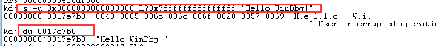
5. 查看0017e7b0的二进制表示形式。
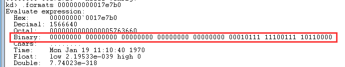
6. 对应四级表形式。
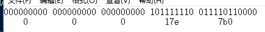 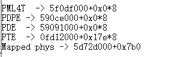
7. 根据cr3中的基地址与计算出的偏移找到所处PML4T位置的值。
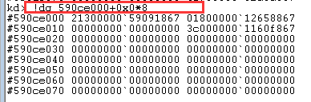
8. 根据PML4T位置的基地址与计算出的偏移找到PDPE位置的值。
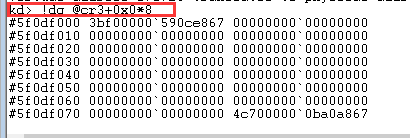
9. 根据PDPE位置的值与计算出的偏移找到PDE位置的值。
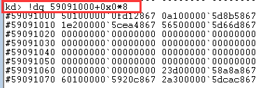
10. 根据PDE位置的值与计算出的偏移找到PTE位置的值。
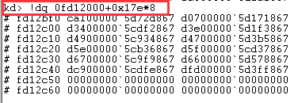
11. 找到“Hello WinDbg!”字符串所处实地址。
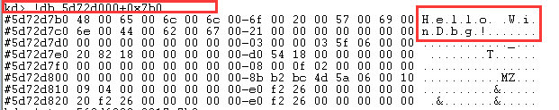